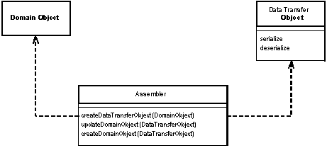
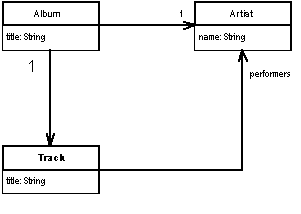
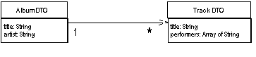

| Home | Articles | Talks | Links | Contact Me | ISA | ThoughtWorks |
An object which acts purely as a carrier of data in order to reduce method calls.

When you're working with a remote interface, such as a Remote Facade, you need to be able to send and receive a large amount of information in a single call. One way to do this is to use lots of parameters. However this is often awkward to program and indeed it's often impossible, such as with languages like Java that only return a single return value.
So the way to deal with this is to create a Data Transfer Object which can hold all the data for the call. This object usually needs to be serializable to go across the connection.
(Many people in the Sun community use the term Value Object for this pattern. I use Value Object to mean something else, see the discussion there for the background to this.)
In many ways, a Data Transfer Object is one of those objects our mothers told us never to write. A Data Transfer Object is often little more than a bunch of fields and getters and setters for these fields. The value of this usually hateful beast is that it allows you to move several pieces of information over a network in a single call - a trick that's essential for distributed systems.
When using a Data Transfer Object whenever a remote object needs some data, it asks for a suitable Data Transfer Object. The Data Transfer Object will usually carry much more data than the specific item that the remote object wants from this request, but should carry all the data that the remote object will need for a while. Due to the latency costs of remote calls, its better to err on the side of sending too much data, rather than run into a situation where multiple calls are needed.
A single Data Transfer Object will usually contain for more than just a single server object. A Data Transfer Object will usually aggregate data from all the server objects that the remote object is likely to want data from. So if a remote object requests data about an order object, the returned Data Transfer Object will contain data from the order, customer, the line items, the products on the line items, the delivery information, all sorts of stuff.
As a result it usually makes sense to design the Data Transfer Object around the needs of a particular client. As a result you'll often see Data Transfer Objects corresponding to web pages or GUI screens. Similarly you may see multiple Data Transfer Objects for an order, depending on the particular screen, of course if different presentations require similar data, then it makes sense to use a single Data Transfer Object to handle them all.
A related question to consider is whether to use a single Data Transfer Object for a whole interaction, or to use different Data Transfer Objects for each request and response. Using different Data Transfer Objects makes it easier to see what data is transferred in each call, but leads to a lot of Data Transfer Objects. The single Data Transfer Object is less work to write, but makes it harder to see how each call transfers information. I'm inclined to use a single Data Transfer Object if there's a lot of commonality over the data, but I don't hesitate to use different Data Transfer Objects if a particular request suggests it. It's one of those things where you can't really make a blanket rule, so I might use one Data Transfer Object for most of the interaction and use different ones for a couple of requests and responses.
A similar question is whether to have a single Data Transfer Object for both request and response, or separate Data Transfer Objects for each. Again there's no blanket rule. If the data in each case is pretty similar, then I'd use one. If they are very different I'd use two.
The fields in a Data Transfer Object are usually fairly simple. They are either primitives, simple classes like strings and dates, or other Data Transfer Objects. This is for a couple of reasons. Firstly they have to be serializable into whatever transport format is being used. Secondly they need to be understood by both sides of the wire.
Some people like to make Data Transfer Objects immutable. In this scheme you receive one Data Transfer Object from the client and create and send back a different object, even if it's the same class. Others will alter the request Data Transfer Object. I don't have any strong opinions either way. On the whole I prefer a mutable Data Transfer Object because that way it's easier to put the data in gradually, even if you do make a new object for the response. Some arguments in favor of immutable Data Transfer Object are due to the naming confusion with Value Object.
A common form for Data Transfer Object is that of a record set. A record set is a set of tabular records, exactly what you get back from a SQL query. Indeed a record set is the Data Transfer Object for a SQL database. Often architectures use this form further through the design. Many GUI tools are designed to work with record sets, so providing a record set to such tools makes a lot of sense. A number of platforms, in particular those with an origin in two-layer client server systems, provide the ability for other layers to create record sets. In this way a domain model could generate a record set of data to transfer to a client, that client treats the record set as if it was coming directly from SQL. The record set can be entirely created by the domain logic, or more likely it's generated from a SQL query and modified by the domain logic before it's passed on to the presentation.
Other than simple getters and setters, the Data Transfer Object is also usually responsible for serializing itself into some format that will go over the wire. Which form to choose depends on what runs on both sides of the connection, what can run over the connection itself, and the ease of doing the serialization. A number of platforms provide built in serialization for simple objects. For example Java has a built-in binary serialization and .NET has built in binary and XML serializations. If there is a built in serialization this usually works right out of the box as Data Transfer Object are simple structures that don't need to deal with the kinds of complexities that you run into with objects in a domain model. As a result I always use the automatic mechanism if I can.
If you don't have an automatic mechanism already available, you can usually create one yourself. In several cases I've seen code generators that take a simple record descriptions and generate appropriate classes to hold the data, provide accessors, and to read and write serializations of that data. The important thing to remember is to make the generator only as complicated as you actually need: don't try to put in features that you think you may need. Often it's a good idea to write the first classes by hand, and use the hand written classes to help you write the generator.
You also have to choose a mechanism that both ends of the connection will work with. If you control both ends, then you can choose the easiest one that will work. If you don't have both ends, you may be able to provide a connector at the end you don't own. Then you can use a simple Data Transfer Object on both sides of the connection and use the connector to adapt to the foreign component.
One of the most common issues to face is whether to use a text or binary serialization form. Text serializations have the advantage that they are easy to read to see what's being communicated. XML is a popular choice since you can easily get tools to create and parse XML documents. The big disadvantage with text is that it more bandwidth to send the same data: something that is particularly true of XML.
An important factor for serialization is dealing with the synchronization of a the Data Transfer Object on each side of the wire. In theory whenever the server changes the definition of the Data Transfer Object the client will update as well. In practice, however, this may not happen. Accessing a server with an out of date client is always going to lead to some kinds of problem, but the serialization mechanism can make the problems more or less painful. With a pure binary serialization of a Data Transfer Object the result will be that communication of that Data Transfer Object will be entirely lost, since any change to the structure of the Data Transfer Object will usually cause the an error on deserialization. Even an innocuous change, such as adding an optional field, will have this effect. As a result direct binary serialization can introduce a lot of fragility into the communication lines.
Other serialization schemes can avoid this. The XML serialization can usually be written in such a way that makes the classes more tolerant of these kinds of changes. Another approach is to use a more tolerant binary approach. Serializing the data using a dictionary is one way to do this. Although I don't like using a dictionary as the Data Transfer Object, it can be a useful way of doing a binary serialization of the data, since that introduces some tolerance into the synchronization.
A Data Transfer Object does not know about how to connect with the domain objects. This is because the Data Transfer Object is something that should be deployed on both sides of the connection, so I don't want the Data Transfer Object to be dependent on the domain object. Similarly I don't want the domain objects to be dependent of the Data Transfer Object since the structure of the Data Transfer Object will change when I alter interface formats. As a general rule I want to keep the domain model independent of the external interfaces.
As a result of this I like to have a separate assembler object that is responsible for creating a Data Transfer Object from the domain model and updating the domain model from a Data Transfer Object.
Figure 1: An assembler object can keep the domain model and data transfer objects independent of each other
The attributes of the data transfer object will either be simple value objects or other data transfer objects. Any structure between data transfer objects should be a very simple graph structure - usually a hierarchy - as opposed to the more complicated graph structures that you see in a Domain Model
When I choose a structure for a Data Transfer Object I prefer to base the structure on the needs of the client of the Data Transfer Object. So if I'm presenting information in a web page, I'll design the Data Transfer Object around the structure of the web page. This may well mean that you'll have multiple Data Transfer Objects for different presentations. This is quite reasonable. Whichever way I do it I need to do transformation from the structure of the domain model to the structure of the presentation - and the assembler is in the best position to do this because it is able to take advantage of the full richness of the domain model's associations and behavior to construct the Data Transfer Object. I make an exception for simple variations, so if one presentation shows a subset of data of another I would have them share the same Data Transfer Object.
I may also find multiple assemblers sharing the same Data Transfer Object. A common case for this is when you have different update semantics in different scenarios using the same data.
Use a Data Transfer Object whenever you need to transfer multiple items of data between two processes in a single method call.
There are some alternatives to Data Transfer Object, although I'm not a fan of them.One is to not use an object at all, but simply to use a setting method with many arguments or a getting method with several pass by reference arguments. This runs into a few problems. Many languages, such as Java, only allow one object as a return value. So although this can be used for updates, it can't be used for retrieving information without playing games with callbacks. Even when it is possible the Data Transfer Object makes an excellent boundary point for testing, allowing you run tests in one process without connecting to other processes. It also allows you to queue calls, rather like a command object, and encapsulates the serialization approach.
Another alternative is to use a collection class to hold the data. I've seen arrays used for this - but I discourage that because the array indices obscure the code. The best collection to use is a dictionary, since you can use meaningful strings as keys. The problem with a dictionary is you lose the advantage of an explicit interface and strong typing. It can be worth using for ad hoc cases when you don't have a generator to hand, as it's easier to manipulate a dictionary than to write a Data Transfer Object by hand. However with a generator, I think you're better off with an explicit interface, especially when you consider that it is being used as communication protocol between different components.
In particular it's worth creating a Data Transfer Object when you want to use XML to communicate between components. The XML DOM is a pain in the neck to manipulate, and it's much better to use a Data Transfer Object that encapsulates the DOM, especially since it's so easy to generate the Data Transfer Object.
Another common purpose for a Data Transfer Object is to act as a common source of data for various different components in different layers. Each component takes the Data Transfer Object, makes some changes to it, and then passes on to the next layer. The use of Record Set in COM and .NET is a good example of this, where each layer knows how to manipulate record set based data, whether it comes directly from a SQL database, or has been modified by other layers. .NET expands on this by providing a built in mechanism to serialize record sets into XML.
[Alur, Crupi, and Malks] discuss this pattern under the name value object. Remember that the [Alur, Crupi, and Malks] is equivalent to my Data Transfer Object; my Value Object is a different pattern entirely. This is a name collision, many people have used value object in the sense that I use it. As far as I can tell the use of value object to mean what I call Data Transfer Object is only done within the J2EE community. As a result I've followed the more general usage.
For this example I'll use the domain model in Figure 2. The data I want to transfer is the data about these linked objects and the structure for the data transfer objects is the one in Figure 3
Figure 2: A class diagram of artists and albums
Figure 3: A class diagram the data transfer objects
The data transfer objects simply the structure a good bit. The name of the artist is collapsed into the album DTO and the performers for a track are represented as an array of strings. This is typical of the kind of collapsing of structure you see for a data transfer object. There are two data transfer objects present, one for the album and one for each track. In this case I don't need a transfer object for the artist as all the data is present on one of the other two. I only have the track as a transfer object because there are several of them in the album and each one can contain more than one data item.
Here's the code to write a Data Transfer Object from the domain model.
class AlbumAssembler...
public AlbumDTO writeDTO(Album subject) {
AlbumDTO result = new AlbumDTO();
result.setTitle(subject.getTitle());
result.setArtist(subject.getArtist().getName());
writeTracks(result, subject);
return result;
}
private void writeTracks(AlbumDTO result, Album subject) {
List newTracks = new ArrayList();
Iterator it = subject.getTracks().iterator();
while (it.hasNext()) {
TrackDTO newDTO = new TrackDTO();
Track thisTrack = (Track) it.next();
newDTO.setTitle(thisTrack.getTitle());
writePerformers(newDTO, thisTrack);
newTracks.add(newDTO);
}
result.setTracks((TrackDTO[]) newTracks.toArray(new TrackDTO[0]));
}
private void writePerformers(TrackDTO dto, Track subject) {
List result = new ArrayList();
Iterator it = subject.getPerformers().iterator();
while (it.hasNext()) {
Artist each = (Artist) it.next();
result.add(each.getName());
}
dto.setPerformers((String[]) result.toArray(new String[0]));
}
Updating the model from the Data Transfer Object is usually a good bit more involved. For this example there is a difference between creating a new album and updating an existing one. Here's the creation code.
class AlbumAssembler...
public void createAlbum(String id, AlbumDTO source) {
Artist artist = Registry.findArtistNamed(source.getArtist());
if (artist == null)
throw new RuntimeException("No artist named " + source.getArtist());
Album album = new Album(source.getTitle(), artist);
createTracks(source.getTracks(), album);
Registry.addAlbum(id, album);
}
private void createTracks(TrackDTO[] tracks, Album album) {
for (int i = 0; i < tracks.length; i++) {
Track newTrack = new Track(tracks[i].getTitle());
album.addTrack(newTrack);
createPerformers(newTrack, tracks[i].getPerformers());
}
}
private void createPerformers(Track newTrack, String[] performerArray) {
for (int i = 0; i < performerArray.length; i++) {
Artist performer = Registry.findArtistNamed(performerArray[i]);
if (performer == null)
throw new RuntimeException("No artist named " + performerArray[i]);
newTrack.addPerformer(performer);
}
}
Reading the DTO involves quite a few decisions. The noticeable one here is how to deal with the artist names as they come in. In this case our requirements are that artists should already be in the registry when I create the album, so if I can't find an artist this is an error. A different create method might decide to create artists when they are mentioned in the Data Transfer Object.
For this example I have a different method for updating an existing album.
class AlbumAssembler...
public void updateAlbum(String id, AlbumDTO source) {
Album current = Registry.findAlbum(id);
if (current == null)
throw new RuntimeException("Album does not exist: " + source.getTitle());
if (source.getTitle() != current.getTitle()) current.setTitle(source.getTitle());
if (source.getArtist() != current.getArtist().getName()) {
Artist artist = Registry.findArtistNamed(source.getArtist());
if (artist == null)
throw new RuntimeException("No artist named " + source.getArtist());
current.setArtist(artist);
}
updateTracks(source, current);
}
private void updateTracks(AlbumDTO source, Album current) {
for (int i = 0; i < source.getTracks().length; i++) {
current.getTrack(i).setTitle(source.getTrackDTO(i).getTitle());
current.getTrack(i).clearPerformers();
createPerformers(current.getTrack(i), source.getTrackDTO(i).getPerformers());
}
}
When you do updates you can decide to either update the excising domain object or to destroy the existing domain object and replace it with a new one. The question here is whether you have other objects referring to the object you want to update. So in this code I'm updating the album since I have other objects referring to the existing album and tracks. However for the title and performers of a track I just replace the objects that are there.
Another question is that if an artist changes, is this changing the name of the existing artist, or changing the artist that the album is linked to. Again these questions have to settled on a use case by use case basis, and I'm handling it by linking to a new artist.
In this example I've used the native binary serialization, this means I have to be careful that the Data Transfer Object classes on both sides of the wire are kept in sync. If I make a change to the data structure of the server Data Transfer Object and don't change the client, then I'll get errors in the transfer. I can make the transfer more tolerant by using a Map as my serialization.
class TrackDTO...
public Map writeMap() {
Map result = new HashMap();
result.put("title", title);
result.put("performers", performers);
return result;
}
public static TrackDTO readMap(Map arg) {
TrackDTO result = new TrackDTO();
result.title = (String) arg.get("title");
result.performers = (String[]) arg.get("performers");
return result;
}
Now if I add a field to the server and use the old client, then although the new field won't be picked up by the client, the rest of the data will transfer correctly.
Of course, writing the serialization and deserialization routines like this is tedious work. I can avoid much of this tedium by using a reflective routine such as this on the Layer Supertype.
class DataTransferObject...
public Map writeMapReflect() {
Map result = null;
try {
Field[] fields = this.getClass().getDeclaredFields();
result = new HashMap();
for (int i = 0; i < fields.length; i++)
result.put(fields[i].getName(), fields[i].get(this));
} catch (Exception e) {throw new ApplicationException (e);
}
return result;
}
public static TrackDTO readMapReflect(Map arg) {
TrackDTO result = new TrackDTO();
try {
Field[] fields = result.getClass().getDeclaredFields();
for (int i = 0; i < fields.length; i++)
fields[i].set(result, arg.get(fields[i].getName()));
} catch (Exception e) {throw new ApplicationException (e);
}
return result;
}
This kind of routine will handle most cases pretty well (although you'll have to add extra code to handle primitives.)
Once I have the data structure for the Data Transfer Object, I need to decide how to serialize it. In Java you get binary serialization for free by simply using a marker interface. This works completely automatically for a Data Transfer Object so it's our first choice. However often it's necessary to use a text based serialization so I can easily send it over http. So for this example I'll use XML.
For this example, I'm using JDOM, since that makes working with XML much easier than using the W3C standard interfaces. For each Data Transfer Object class I write methods to read and write an XML element to represent that class.
class AlbumDTO...
Element toXmlElement() {
Element root = new Element("album");
root.setAttribute("title", title);
root.setAttribute("artist", artist);
for (int i = 0; i < tracks.length; i++)
root.addContent(tracks[i].toXmlElement());
return root;
}
static AlbumDTO readXml(Element source) {
AlbumDTO result = new AlbumDTO();
result.setTitle(source.getAttributeValue("title"));
result.setArtist(source.getAttributeValue("artist"));
List trackList = new ArrayList();
Iterator it = source.getChildren("track").iterator();
while (it.hasNext())
trackList.add(TrackDTO.readXml((Element) it.next()));
result.setTracks((TrackDTO[]) trackList.toArray(new TrackDTO[0]));
return result;
}
class TrackDTO...
Element toXmlElement() {
Element result = new Element("track");
result.setAttribute("title", title);
for (int i = 0; i < performers.length; i++) {
Element performerElement = new Element("performer");
performerElement.setAttribute("name", performers[i]);
result.addContent(performerElement);
}
return result;
}
static TrackDTO readXml(Element arg) {
TrackDTO result = new TrackDTO();
result.setTitle(arg.getAttributeValue("title"));
Iterator it = arg.getChildren("performer").iterator();
List buffer = new ArrayList();
while (it.hasNext()) {
Element eachElement = (Element) it.next();
buffer.add(eachElement.getAttributeValue("name"));
}
result.setPerformers((String[]) buffer.toArray(new String[0]));
return result;
}
Of course these only create the elements in the XML DOM. To perform the serialization I need to read and write text. Since the track is only transferred in the context of the album, I only need to write this code for the album.
class AlbumDTO...
public void toXmlString(Writer output) {
Element root = toXmlElement();
Document doc = new Document(root);
XMLOutputter writer = new XMLOutputter();
try {
writer.output(doc, output);
} catch (IOException e) {
e.printStackTrace();
}
}
public static AlbumDTO readXmlString(Reader input) {
try {
SAXBuilder builder = new SAXBuilder();
Document doc = builder.build(input);
Element root = doc.getRootElement();
AlbumDTO result = readXml(root);
return result;
} catch (Exception e) {
e.printStackTrace();
throw new RuntimeException();
}
}
 |  |
{kind=link}
{kind=link}